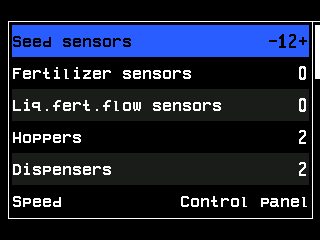

The profile
What the profile of the Hectare Mini is, every item of the profile menu with its values, and the rules a profile must keep before the panel accepts it.
The profile tells the panel which devices the machine has and how many of each. It decides which indicators the home screen shows, which context menus exist and which devices the panel polls. A system is usually delivered with its profile set; change it only when the equipment of the machine changes. How to check it: Check the profile and the connections. How to change it: Set up the profile.
The profile counts what is watched and what is driven, not boxes. One input device can carry, for example, fan sensors and hopper sensors together; one actuator controller can carry an actuator and two marker sensors. Each of them is entered under its own item.

- “Seed sensors” — the selected item.
- The value, here 12, between − and +: change it with “MINUS” and “PLUS”.
- “Fertilizer sensors”.
- “Liq.fert.flow sensors”.
- “Hoppers”.
- “Dispensers”.
- “Speed” — how the speed sensor is connected.
- Its value, here “Control panel”.
- Scroll bar. The list goes on below the screen.
The items
Every item needs the “Service” level, like the menu itself.
| Item | What it states | Values |
|---|---|---|
| “Seed sensors” | Number of seed sensors. | 2 … 60 |
| “Fertilizer sensors” | Number of dry fertilizer sensors. | 0 … 60 |
| “Liq.fert.flow sensors” | Number of liquid fertilizer flow sensors. | 0 … 60 |
| “Hoppers” | Number of hopper level sensors. | 0 … 9 |
| “Dispensers” | Number of dispenser shaft sensors. | 0 … 9 |
| “Speed” | Whether there is a travel speed sensor and where it is connected: “No”; “Control panel” — one sensor on the panel; “Input device” — one sensor on an input device; “Input device (2)” — two sensors on an input device. | see left |
| “GPS” | The built-in GPS receiver as a speed source: “No”; “UBX” — the normal setting; “NMEA” — the receiver delivers its data in the NMEA 0183 format. While it has a valid fix, GPS takes priority over the sensor under “Speed”; without a fix the sensor takes over by itself. GPS reception | see left |
| “Fans” | Number of fan speed sensors. | 0 … 2 |
| “Pressure sensors” | Number of pressure (vacuum) sensors. | 0 … 3 |
| “Work position sensor” | Whether there is a sensor for the working and transport position of the implement. | “No” / “Yes” |
| “Markers” | How the marker arms are watched: “No”; “One” — one sensor; “Both” — one sensor per arm. | see left |
| “No battery charge” | Battery charge sensor of the fan-drive engine. Switch it off together with the ignition sensor. | “No” / “Yes” |
| “Emergency oil pressure” | Low oil pressure sensor of the fan-drive engine. Switch it off together with the ignition sensor. | “No” / “Yes” |
| “Ignition” | Ignition key sensor of the fan-drive engine. | “No” / “Yes” |
| “Low fuel” | Fuel level sensor of the fan-drive engine. | “No” / “Yes” |
| “Air filter” | Air filter sensor of the fan-drive engine. | “No” / “Yes” |
| “EMD of the seeds” | Number of electric dispenser motors for seed. | 0 … 60 |
| “EMD of the fertilizers” | Number of electric dispenser motors for fertilizer. | 0 … 30 |
| “Tramline actuators” | Number of tramline actuators. | 0 … 4 |
| “Liq.fert.pump controller” | Whether there is a pump controller for liquid fertilizer. | 0 / 1 |
| “Save profile” | Saves the profile and restarts the panel. | — |
Rules the profile must keep
“Save profile” refuses a profile that breaks one of these rules and shows “Invalid profile!”:
- at least 2 seed sensors;
- “Hoppers”, “Dispensers” and the five engine sensors together: at most 12; above 10, “Fans” and “Pressure sensors” together may be at most 4;
- “Fans” and “Pressure sensors” together: at most 5;
- seed and fertilizer motors together: at most 60; fertilizer motors only together with seed motors and with fertilizer sensors;
- dispenser motors and a liquid pump controller need a speed sensor.
Something your machine does that this page does not answer? Write to support@agriwelt.com — an engineer answers.